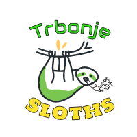

EKIPE
Jan Kupljen Trbonje Sloths

Team owner: Jan Kupljen
Joined league: 2017 (season 1)
History:
Team BELI (seasons 1-2),
Team KUPS (seasons 3-4),
Team JAN (season 6)
Arena: Športna dvorana Trbonje
Capacity: 100
Location: Trbonje, Slovenija
Average ranking: 4.14 (2nd)
| Sezona | Uvrstitev |
|---|---|
| 2017/18 | 3 |
| 2018/19 | 1 |
| 2019/20 | 4 |
| 2020/21 | 6 |
| 2021/22 | 10 |
| 2022/23 | 2 |
| 2023/24 | 3 |
| 2024/25 | ... |
| AVERAGE | 4.14 |
Intervju - JAN KUPLJEN (september, 2022)
Drvimo naprej s predstavitvami in že smo pri četrtem moštvu! Tokrat smo se z Irske preselili direktno po poti »govedine«, vse do visoko-ležečega sela Sv. Danijel, ki je premajhen celo za ime ekipe, zato je moral tamkajšnji rančer in fantasy manager
Kups gledati nekoliko širšo sliko in izbrati Trbonje. Z njim je eden izmed naših mnogih novinarjev opravil krajši pogovor..
1) Videlo se je, da Nejc še ni pozabil lanskega masterclassa, ko ste mu na zadnji dan pokazali kako se stvarem streže. Ali je bil to pokazatelj kdo je superiorni fantasy manager?
In tudi prav je, da ga ni pozabil! V zadnji dan tiste playoff serije sem se podal z mentaliteto "nebo me zej nek rookie tule fukno nooo" in ob tej priložnosti bi rad še enkrat izpostavil vseh 5 junakov, ki so bili acquired na to zgodovinsko nedeljo:
Duane Washington Jr., Oshae Brissett, Jalen Smith, Naz Reid in Jordan McLaughlin. Srčno upam, da igralcev takšnega kova drugo leto v Trbonjah ne bomo rabili spremljati.
2) Po tem ko ste v prvih 3 sezonah vselej stali na stopničkah, vas zadnji dve sezoni ni videti več niti v top5. Kaj se dogaja, ali se je konkurenca res toliko zaostrila?
Videti je, da nam nov matchup sistem ne leži najbolj, saj se kvaliteto Fantasy managerja lahko meri le tekom celotne sezone. Srčno upam, da se bodo moji Lenivci to sezono dokončno adaptirali in se vrnili na pota stare slave.
Obenem pa seveda moram priznati, da so vidno napredovali tako stari prekajeni mački naše lige, moč in znanje pa so pokazali tudi managerji kateri so se pridružili po premierni sezoni (nekateri bolj, nekateri manj - cough, cough Cici).
3) Nekoč ste sloveli kot ljubitelj SLOTSOV, zdaj ste si za maskoto izbrali SLOTHSE. Gre za naključje, kako ste pravzaprav prišli do izbire te živali?
Rekel bi, da je lenivec maskota, s katero se lahko 100% poistovetim in sledeč trendom v ligi se mi je zdelo smiselno na tem mestu narediti re-brand ekipe in po 5 sezonah končno zamenjati basic Air Force 1 logo in spremeniti še bolj basic ime "Team Jan".
Zaključna misel
Glede na to kako smo zadnje sezone slabi, gre lahko trend samo še navzgor in to nas navdaja z optimizmom.